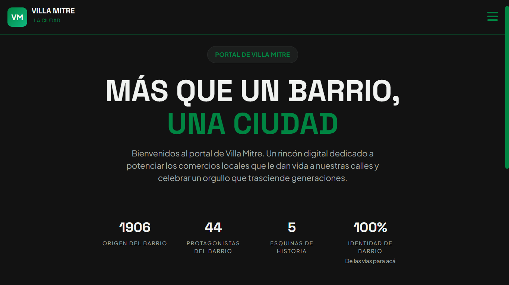
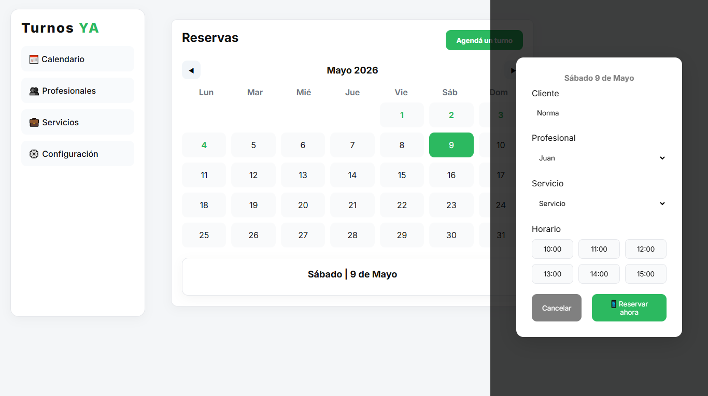
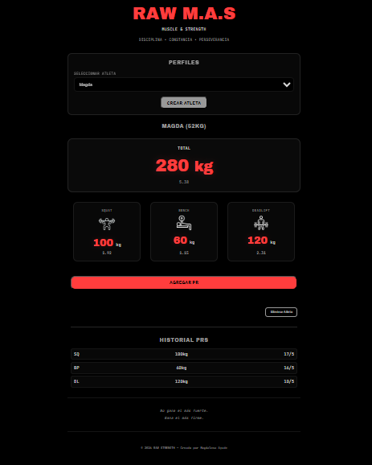
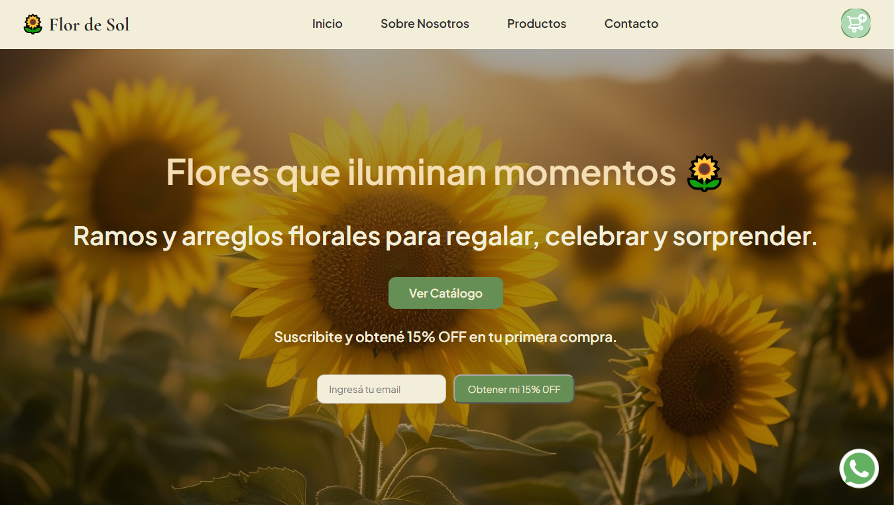

HTML
Construcción de estructuras semánticas, accesibles y organizadas para desarrollar experiencias web claras y bien estructuradas.
Desarrollo con código, construyo con propósito
Soy desarrolladora Frontend y me enfoco en crear experiencias web funcionales, responsive y visualmente cuidadas.
Mi experiencia se construye a través de proyectos reales, trabajando desde la estructura y el diseño de interfaces hasta la implementación de funcionalidades y servicios dinámicos. Busco resolver necesidades concretas y transformar ideas en productos digitales claros, útiles y fáciles de usar.
Construcción de estructuras semánticas, accesibles y organizadas para desarrollar experiencias web claras y bien estructuradas.
Desarrollo de interfaces responsive utilizando Flexbox, Grid y animaciones para adaptar cada experiencia a distintos dispositivos.
Implementación de funcionalidades, interacciones y experiencias dinámicas mediante manipulación del DOM y gestión de eventos.
Integración de bases de datos y servicios para incorporar funcionalidades dinámicas en aplicaciones web.

Plataforma web desarrollada para visibilizar todo lo que se puede encontrar en Villa Mitre: comercios, profesionales, emprendimientos, actividades, servicios y propuestas del barrio. El proyecto reúne esta información en un mismo espacio digital, facilitando el descubrimiento y el acceso a opciones locales. Cuenta con una interfaz responsive, funcionalidades de contacto y navegación, y medición de interacciones mediante Google Analytics.

Sitio web desarrollada para facilitar la gestión de turnos de profesionales y pequeños negocios. Cuenta con una interfaz clara y responsive, diseñada para simplificar la navegación y la interacción del usuario.

Sitio web desarrollado para una marca vinculada al entrenamiento y el rendimiento físico. Incluye una interfaz personalizada, identidad visual y funcionalidades dinámicas, con Firebase integrado como servicio de base de datos.

Sitio web desarrollado para una marca de flores y regalos, combinando identidad visual con funcionalidades orientadas a la compra. Incluye un carrito dinámico que permite seleccionar productos, modificar cantidades y visualizar el detalle del pedido con productos, cantidades y precios antes de enviarlo directamente por WhatsApp.
Desarrollo sitios y aplicaciones web pensados para cada proyecto, combinando funcionalidad, diseño y una experiencia de usuario clara. Si tenés una idea, un emprendimiento o una marca que necesita presencia online, escribime y trabajemos juntos para transformarla en una experiencia digital funcional y profesional.
.png)